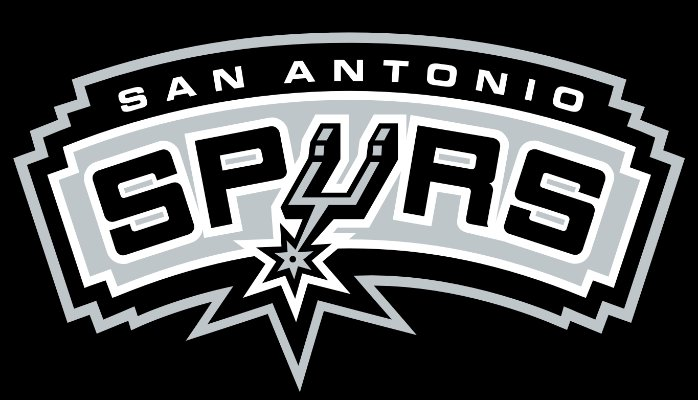
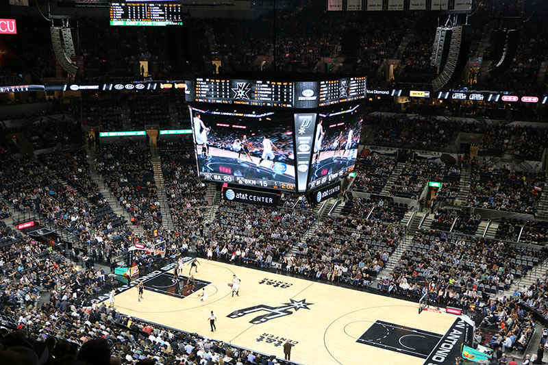
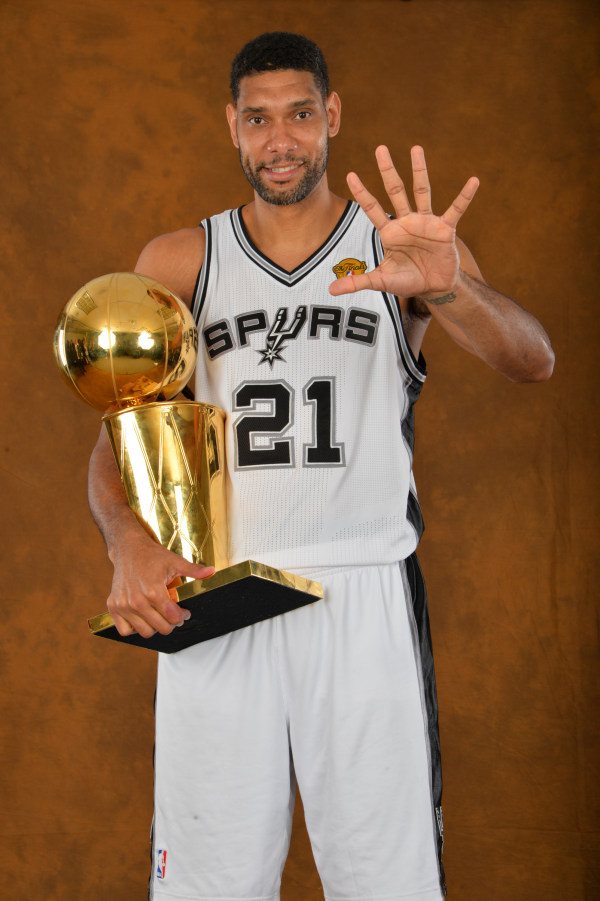

San Antonio Spurs
| Championships Won |
5 |
| Year Founded |
1967 |
| Net Worth |
$1 billion |
| Founder |
Irving Allen Mathews |
| Arena |
AT&T Center |
.



Early Years
The San Antonio Spurs started out as the Dallas Chaparrals in the American Basketball Association (ABA) which was the original basketball league before the
National Basketball Association (NBA) was formed. Dallas Chaparrals were one of only 11 teams that started in the very first season of the upstart ABA. While the
Chaparrals had been doing well on the court, they were in a terrible financial situation by their third season, mostly because the owners refused to spend
much money on the team. After missing the playoffs for the first time since they were formed in the 1972–73 season, almost all of the owners wanted out. A group of
San Antonio businessmen, led by Angelo Drossos, John Schaefer, and Red McCombs, worked out a lease deal with the Dallas ownership group. Drossos and his group
leased the team for three years and move it to San Antonio. After the deal was signed, the team was renamed the San Antonio Gunslingers.
But before they even played a game the name was changed to Spurs.
Success
The Chicago Bulls have 5 championships which is the fourth most in the league, including back to back championships in 2013 and 2014.
The Spurs have also won their western conference 6 times and won their division 22 times. They have 8 retired numbers of their greatest players. An
astonishing fact is that Tim Duncan, who is one of the greatest to ever play the sport, was with the team for every championship they won. A huge credit
of the Spurs succes goes to Tim Duncan.
Best Players in Franchise History
- Tim Duncan
- David Robinson
- Kawhi Leonard
- Manu Ginobili
- George Gervin
- Tony Parker